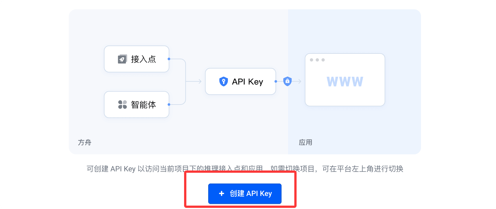
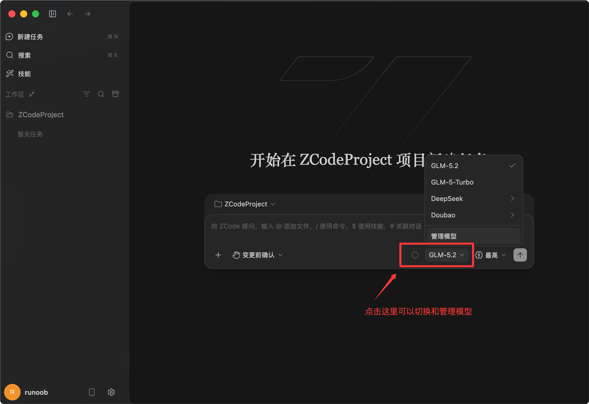
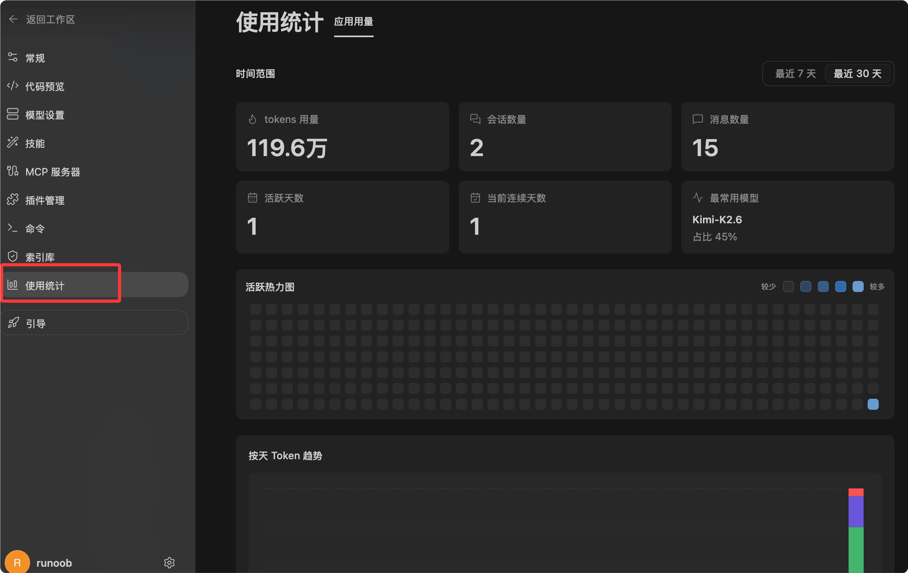
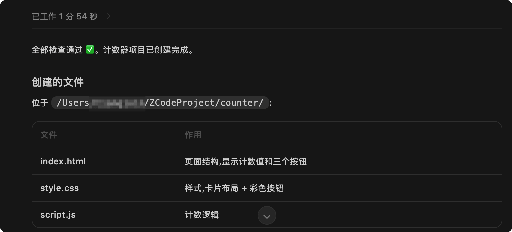

ZCode 入门教程
ZCode 是智谱推出的开发者智能体开发环境，也被称作 Agentic Development Environment，简称 ADE，区别于传统编辑器，它搭载可深度操作项目的 AI 助手，能查看项目、修改文件、执行命令并梳理代码变更。
ZCode 可将 AI 智能体接入真实项目，一站式完成需求解析、代码修改、测试、代码评审与上线预检全流程开发工作。
普通 AI 工具只能生成零散代码片段，ZCode 支持用自然语言下达完整开发任务，适合想要以自然语言驱动开发的使用者。

ZCode 的核心不是简单聊天，而是围绕一个开发目标，持续推进一个完整任务。
| 概念 | 说明 | 适合场景 |
|---|---|---|
| ZCode | 面向 AI Agent 的开发环境。 | 希望用自然语言推进真实项目开发。 |
| ZCode Agent | 负责理解任务、读取上下文、修改代码和验证结果的智能体。 | 复杂需求拆解、代码生成、调试、测试。 |
| Long Horizon Task | 跨度较长、步骤较多的开发任务。 | 重构模块、修复复杂 Bug、实现完整功能。 |
| 工作区 | ZCode 处理项目文件、终端、Git 状态和任务上下文的地方。 | 打开已有项目，或在一个目录中创建新项目。 |
ZCode 适合做什么
ZCode 适合处理需要连续上下文的开发工作，可以读取文件、理解项目结构、执行命令，并在改动完成后给出总结。
这类能力适合真实工程，而不仅是一次性问答。
| 任务类型 | 可以让 ZCode 做什么 | 典型提示词 |
|---|---|---|
| 新功能开发 | 根据需求检查项目结构，创建或修改相关文件。 | 帮我为这个项目添加登录页面，并接入现有路由。 |
| Bug 修复 | 定位错误原因，修改代码，并运行验证命令。 | 修复移动端按钮点击后页面闪烁的问题。 |
| 代码理解 | 梳理模块关系，说明某个功能从入口到实现的调用链。 | 帮我解释这个项目的支付流程是怎么走的。 |
| 代码评审 | 检查变更风险，提出内联建议或改进方向。 | 请 review 当前改动，重点检查回归风险。 |
| 发布准备 | 生成 changelog、整理 release note、检查 Git 状态。 | 根据最近的提交生成一份发布说明草稿。 |
安装 ZCode
进入 ZCode 中文官网后，可以从首页点击下载入口。
官网地址是 https://zcode.z.ai/cn。
官网页面显示当前可下载的版本，支持 Windows、macOS、Linux，一般官方会显示当前的系统的下载按钮：

下载后，点击安装即可：

安装后的基本准备
首次启动会进入「首次启动设置」页面，完成后在左下角点击 连接使用 进入登录页面：

如果要使用模型服务，还需要完成 API Key 或 Coding Plan 相关配置，也可以登录后再设置页面配置：

官方现在免费的额度很有限，基本不要够用，推荐以下 Coding Plan 套餐：
接下来我们以字节方舟的 Coding Plan 为例配置，访问方舟 Coding Plan 活动，按需订阅套餐，用量不大用 Lite 版本就可以了, 如果用量非常大可以使用 Pro 版本。
购买成功后，点击 创建您的 API Key：

然后点创建按钮：

点击下面的小眼睛图标，可以看到 API key 可以，要用时，复制上就可以了：

不同的工具配置的 Base URL 根据兼容的协议会有不同：
- 兼容 Anthropic 接口协议工具：https://ark.cn-beijing.volces.com/api/coding
- 兼容 OpenAI 接口协议工具：https://ark.cn-beijing.volces.com/api/coding/v3
我们这里选择 https://ark.cn-beijing.volces.com/api/coding，API key 设置你自己的，模型列表可以添加多个模型，这里填入 Kimi-K2.6，还可以添加其他模型比如 DeepSeek-V4-Pro：

添加完后，可以测试模型是否可用：

在首页对话框右下角可以看到我们添加的模型：

ZCode 提供了 API Key 配置、使用统计、用户反馈与支持等页面。

第一次使用 ZCode
我们可以从一个简单项目开始，让 ZCode 创建一个浏览器端小游戏，或者让它解释一个已有项目的目录结构。
这样可以快速理解 ZCode 的工作方式。
打开或创建工作区
工作区可以理解为 ZCode 当前正在处理的项目目录。
你可以打开已有项目目录，也可以在一个空目录里开始新项目。
ZCode 会围绕这个目录读取文件、执行命令和管理变更。
新建任务
在 ZCode 中，任务是推动 Agent 工作的基本单位。
官网示例中出现了使用自然语言描述任务的方式。
页面也显示了新建任务快捷键 ⌘N。
新建任务示例：
创建一个智能五子棋网页游戏，包含棋盘、玩家落子、胜负判断和简单电脑对手。

观察执行过程
任务开始后，ZCode 会根据目标分析项目，并逐步推进。
你可以看到任务进度、执行日志、文件变更、终端输出和 Git 状态。
这比只复制一段 AI 生成的代码更可靠，因为它能把代码放回真实项目里验证。
| 界面区域 | 作用 | 初学者应该关注什么 |
|---|---|---|
| 任务进度 | 显示当前任务拆解和完成情况。 | 确认 Agent 是否按照目标推进。 |
| 终端输出 | 显示命令执行结果。 | 关注是否有报错，以及验证命令是否通过。 |
| 文件变更 | 显示新增、修改或删除的文件。 | 检查改动是否符合预期。 |
| Git 状态 | 显示当前工作区的版本控制状态。 | 提交前确认只包含你需要的改动。 |
一个完整的入门示例
下面用一个简单的前端项目来演示如何给 ZCode 下达任务。
这个示例不依赖后端，适合初学者理解流程。
实例
要求：
1. 使用 HTML、CSS、JavaScript 三个文件。
2. 页面中显示当前计数值。
3. 提供"加一""减一""重置"三个按钮。
4. 样式简洁，适合初学者阅读。
5. 完成后请运行必要的检查，并告诉我创建了哪些文件。
这个提示词明确告诉 ZCode 要创建什么、使用哪些文件、包含哪些功能，以及完成后需要说明结果。
提示词越具体，Agent 的执行越容易符合预期。

然后会提示权限信息，允许权限，点确认即可：

可能生成的项目结构
如果你在空目录中执行这个任务，ZCode 可能会创建类似下面的文件结构。
counter-demo/ ├── index.html ├── styles.css └── app.js

可以查看源码：

源码展示效果：

如何写好给 ZCode 的提示词
ZCode 可以理解自然语言，但这并不代表提示词越短越好。
一个好的提示词应该包含目标、范围、约束和验收标准。
这样 Agent 才能更稳定地规划和执行。
| 组成部分 | 说明 | 示例 |
|---|---|---|
| 目标 | 说明你希望最终得到什么。 | 添加一个用户设置页面。 |
| 范围 | 说明应该改哪些部分，不应该改哪些部分。 | 只修改前端页面，不改后端接口。 |
| 约束 | 说明技术栈、风格、兼容性要求。 | 使用现有组件库，不新增依赖。 |
| 验收标准 | 说明完成后如何判断是否成功。 | 运行 npm test 通过，并在移动端布局正常。 |
实例
范围：
- 只修改登录页相关文件。
- 不修改后端接口。
- 不新增第三方依赖。
要求：
- 保持现有视觉风格。
- 适配 375px 宽度的手机屏幕。
- 修改后请说明改了哪些文件。
- 如果项目中有测试或检查命令，请运行并报告结果。
不要只写"帮我优化一下"。这种提示词范围太大，Agent 很难判断你真正想要什么。
常用工作流
ZCode 的优势在于把开发过程串起来。
你可以把一个任务从需求描述推进到代码修改，再推进到验证和总结。
从零创建功能
当你要创建新功能时，先说清楚功能边界。
如果项目已有技术栈，也要要求 ZCode 遵循现有写法。
实例
要求：
- 使用项目已有的路由方式。
- 复用已有页面布局组件。
- 页面包含标题、简介、联系方式三部分。
- 不新增依赖。
- 完成后请列出新增和修改的文件。
理解已有代码
当你接手一个陌生项目时，可以先让 ZCode 解释结构，而不是立刻修改代码。
这有助于降低误改风险。
实例
帮我阅读当前项目结构，并说明：
- 应用入口在哪里。
- 路由在哪里定义。
- API 请求封装在哪里。
- 构建和测试命令分别是什么。
提交前检查
在提交代码前，可以让 ZCode 检查当前变更。
它可以帮助你发现遗漏文件、潜在回归和测试缺失。
实例
重点检查：
- 是否有明显 Bug。
- 是否破坏已有功能。
- 是否有未使用变量或调试代码。
- 是否需要补充测试。
请先给出问题列表，不要直接修改文件。
安全确认与权限
ZCode 会在关键命令、文件修改和高权限操作前进入确认流程，这可以避免 Agent 在你不知情的情况下执行危险操作。

我们可以在执行命令前阅读确认内容，再决定是否允许。
| 操作类型 | 为什么需要确认 | 建议做法 |
|---|---|---|
| 修改文件 | 会改变项目代码。 | 确认文件路径和修改目标是否正确。 |
| 删除文件 | 可能造成数据丢失。 | 删除前先检查文件内容，必要时备份。 |
| 运行命令 | 命令可能安装依赖、启动服务或改变环境。 | 确认命令作用，避免执行不认识的高风险命令。 |
| Git 操作 | 可能影响提交历史或远程仓库。 | 提交和推送前先查看 git status。 |
如果你不确定某个命令是否安全，可以先让 ZCode 解释命令作用，而不是直接允许执行。
常用命令与检查方式
ZCode 可以使用终端执行项目命令。
具体命令取决于你的项目技术栈。
下面列出一些官网示例和常见开发场景中会出现的命令。
| 命令 | 功能 | 示例 |
|---|---|---|
| pwd | 查看当前所在目录。 | 确认 ZCode 当前终端是否位于项目目录。 |
| git status --short | 用简洁格式查看 Git 变更。 | 提交前确认有哪些文件被修改。 |
| node --check app.js | 检查 JavaScript 文件语法。 | 验证 app.js 是否存在语法错误。 |
| npm test | 运行项目测试。 | 适合 JavaScript 或前端项目。 |
| npm run build | 执行项目构建。 | 发布前确认项目能正常打包。 |
$ git status --short M src/App.js M src/styles.css
上面的输出表示有两个文件被修改。
提交前，你应该确认这些改动都符合预期。
进阶能力概览
除了桌面端任务执行，ZCode 文档中还提到了一些进阶能力。
初学阶段不需要一次性掌握，但可以先了解它们解决什么问题。
| 能力 | 说明 | 什么时候用 |
|---|---|---|
| Remote Control | 通过远程方式跟进或控制 Agent 任务。 | 任务耗时较长，希望离开电脑后继续查看进度。 |
| Bot Channel | 通过飞书或微信 Bot 触发和推进任务。 | 团队协作、移动端跟进、远程补充指令。 |
| Skill | 为特定任务提供专门能力或流程。 | 重复处理同类任务，例如安全审计、文档生成、测试运行。 |
| MCP 服务器 | 为 Agent 接入外部工具或数据源。 | 需要连接数据库、知识库、内部系统或专用工具。 |
| 子智能体 | 让不同 Agent 处理不同子任务。 | 大任务需要并行探索、审查或分工处理。 |
初学者常见问题
下面整理一些刚开始使用 ZCode 时容易遇到的问题。
ZCode 会不会自动乱改我的项目
ZCode 的关键操作会进入确认流程。
你应该在允许前检查它要修改的文件和要运行的命令。
如果你只想让它阅读项目，可以在提示词里明确写"不要修改文件"。
我应该让 ZCode 一次做很多事吗
不建议初学者一开始就给出过大的任务。
更好的方式是把任务拆小。
例如先让它理解项目结构，再让它修改某个模块，最后让它运行验证。
任务失败怎么办
先查看终端输出和错误信息。
然后让 ZCode 基于错误继续修复。
不要急着重新开始一个完全不同的任务，否则可能丢失上下文。
什么时候需要人工检查
涉及业务逻辑、权限、安全、支付、数据删除和发布操作时，都应该人工检查。
AI 可以辅助发现问题，但最终责任仍然在开发者。
学习建议
学习 ZCode 的最佳方式不是背命令，而是从小任务开始练习。
你可以先用它创建一个简单页面，再让它解释生成的代码。
接着尝试让它修复一个小 Bug，并观察它如何读取文件、修改代码和验证结果。
当你熟悉这种任务驱动的开发方式后，再逐步使用代码评审、发布准备、Remote Control 和 Skill 等能力。
把 ZCode 当成会操作项目的开发伙伴，而不是只会回答问题的聊天机器人。这样更容易发挥它的价值。

点我分享笔记